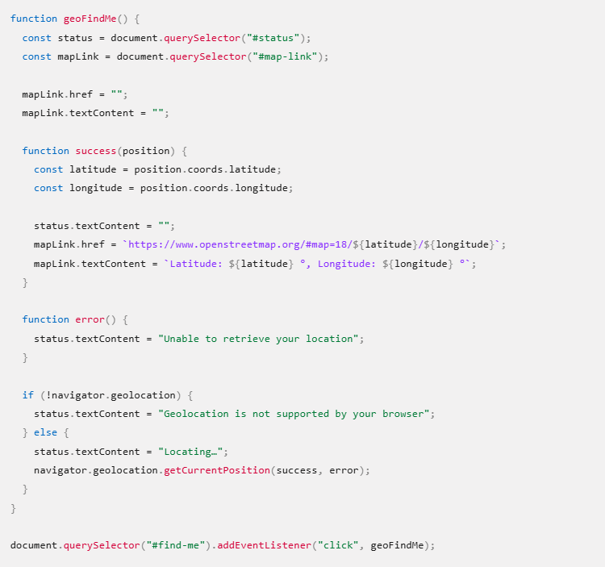

Geolocation API uses a device's signal via GPS, cell towers, or Wi-Fi to retrieve its location with latitude and longitude. JavaScript and its library are used to drive such functions like the following code snippet below.
This is an example of a programmed function taken from MDN Web Docs that would prompt a user if they would like to share their location with a website upon clicking a button.
The button below does just that (also taken from the website).